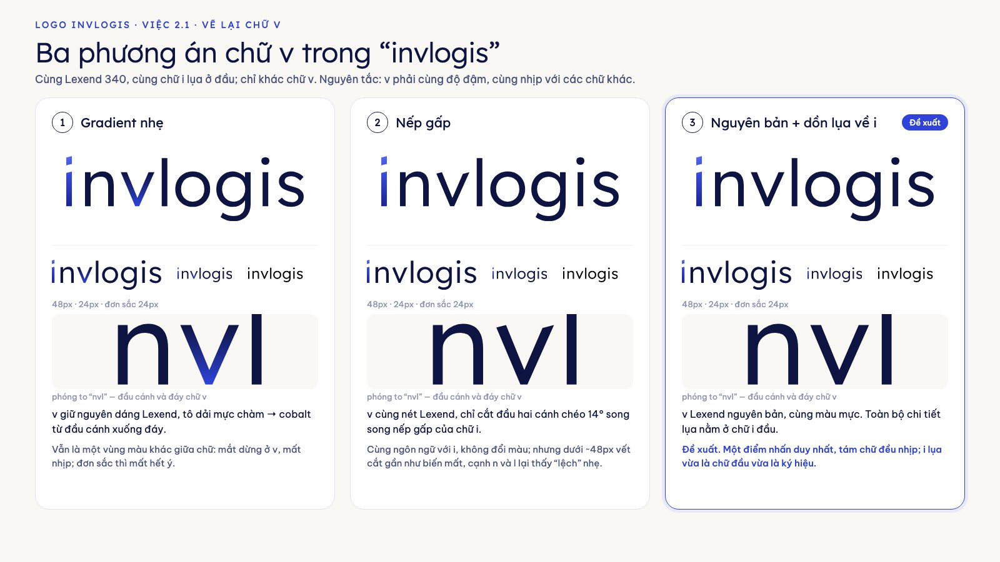
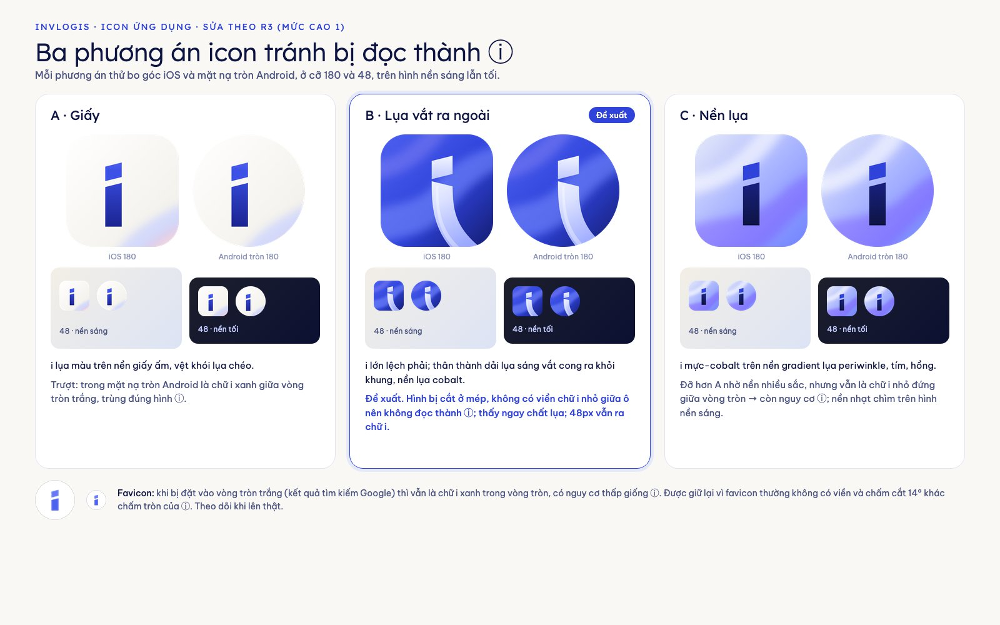
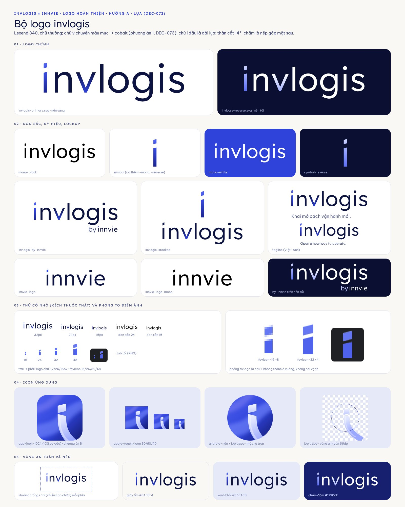
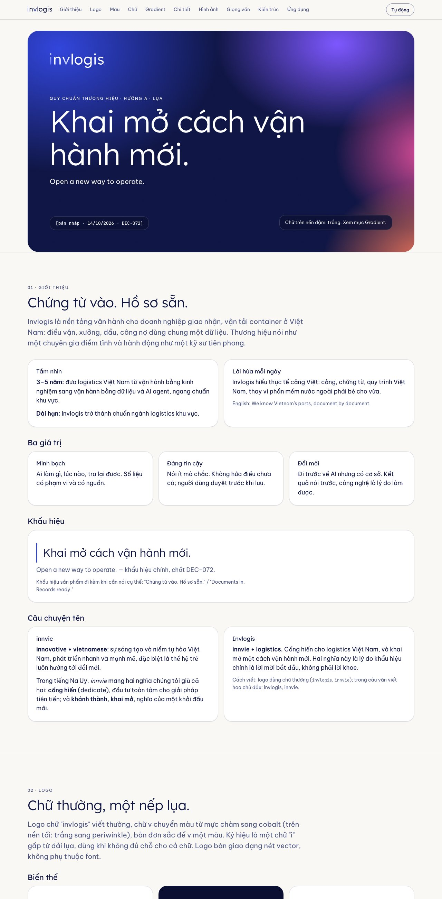
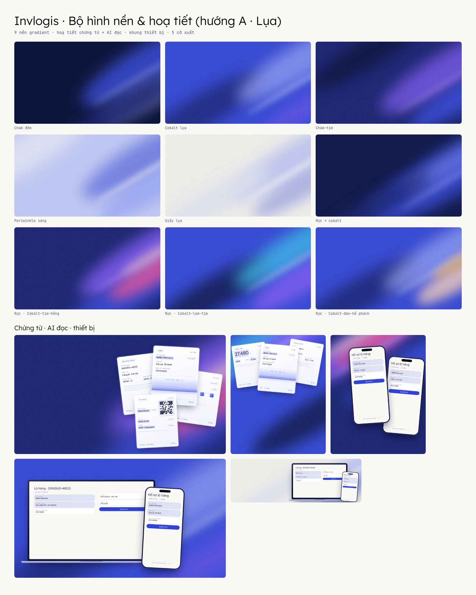

<title>Invlogis Mốc 2</title>
<link rel="stylesheet" href="https://fonts.googleapis.com/css2?family=Be+Vietnam+Pro:wght@400;500;600&family=JetBrains+Mono:wght@500&display=swap">
<style>
/* Bố cục: một cột; mỗi quyết định là một khối ảnh + ô chọn + ghi chú; thanh "Báo xong" cuối trang */
:root{
  --bg:#f6f5f1; --surface:#ffffff; --ink:#14173a; --muted:#565b78; --line:#dcdbe6;
  --accent:#2a36d6; --accent-soft:#e7e9fb; --ok:#1f6b45; --ok-soft:#e3f2ea;
  --f-body:"Be Vietnam Pro",system-ui,-apple-system,"Segoe UI",sans-serif;
  --f-mono:"JetBrains Mono",ui-monospace,Menlo,monospace;
}
@media (prefers-color-scheme: dark){:root:not([data-theme="light"]){
  --bg:#10122a; --surface:#181b38; --ink:#eceef9; --muted:#a6abc8; --line:#2c3058;
  --accent:#8f9bff; --accent-soft:#232a5c; --ok:#7fd3a6; --ok-soft:#173528; color-scheme:dark}}
:root[data-theme="dark"]{
  --bg:#10122a; --surface:#181b38; --ink:#eceef9; --muted:#a6abc8; --line:#2c3058;
  --accent:#8f9bff; --accent-soft:#232a5c; --ok:#7fd3a6; --ok-soft:#173528; color-scheme:dark}
body{background:var(--bg);color:var(--ink);font:16px/1.6 var(--f-body);padding-inline:16px;padding-block:32px 64px}
main{max-width:920px;margin:0 auto;display:grid;gap:44px}
h1,h2{text-wrap:balance;line-height:1.25;margin:0}
h1{font-size:clamp(28px,5vw,40px);font-weight:600}
h2{font-size:22px;font-weight:600}
p{margin:0;max-width:65ch}
.eyebrow{font:500 12px/1 var(--f-mono);letter-spacing:.08em;text-transform:uppercase;color:var(--accent)}
.stack{display:grid;gap:12px}
.lead{color:var(--muted);font-size:17px}
.small{font-size:14px;color:var(--muted)}
img.shot{width:100%;display:block;border-radius:12px;border:1px solid var(--line);background:var(--surface)}
.block{display:grid;gap:16px;padding-top:28px;border-top:1px solid var(--line)}
.ask{background:var(--surface);border:1px solid var(--line);border-radius:14px;padding:18px;display:grid;gap:12px}
.opts{display:flex;flex-wrap:wrap;gap:8px}
.opts label{display:flex;align-items:center;gap:8px;border:1px solid var(--line);border-radius:999px;padding:8px 14px;cursor:pointer;font-size:15px}
.opts input{accent-color:var(--accent)}
.opts label:has(input:checked){border-color:var(--accent);background:var(--accent-soft)}
.opts label:focus-within{outline:2px solid var(--accent);outline-offset:2px}
textarea{width:100%;box-sizing:border-box;min-height:72px;font:15px/1.5 var(--f-body);color:var(--ink);background:var(--bg);border:1px solid var(--line);border-radius:10px;padding:10px 12px}
textarea:focus{outline:2px solid var(--accent);outline-offset:1px}
.saved{font:500 12px/1 var(--f-mono);color:var(--ok)}
.done{background:var(--accent-soft);border-radius:14px;padding:22px;display:grid;gap:12px}
button{font:600 15px/1 var(--f-body);background:var(--accent);color:var(--surface);border:0;border-radius:999px;padding:12px 20px;cursor:pointer;justify-self:start}
button:focus-visible{outline:2px solid var(--ink);outline-offset:2px}
button[disabled]{opacity:.5;cursor:default}
.status{font-size:14px;color:var(--muted)}
.status.ok{color:var(--ok)}
</style>

<main>
  <header class="stack">
    <div class="eyebrow">Invlogis × innvie · Mốc 2 · 14/10/2026</div>
    <h1>Duyệt bộ logo, màu chữ và nền</h1>
    <p class="lead">Hướng A · Lụa đã hoàn thiện theo lựa chọn của bạn ở Mốc 1, chữ v đã chốt phương án 1 (gradient nhẹ) và bộ logo, bảng logo, trang quy chuẩn đã dựng lại theo đó. Chọn và ghi chú ngay ở từng khối; câu trả lời tự lưu. Xong bấm "Báo xong" ở cuối trang.</p>
    <p id="dbnote" class="small">Đang kết nối nơi lưu câu trả lời…</p>
  </header>

  <section class="block" data-q="v">
    <div class="stack"><div class="eyebrow">1 · Chữ v</div><h2>Chọn chữ v trong "invlogis"</h2>
      <p class="small"><strong>Đã chốt: phương án 1 · Gradient nhẹ (DEC-073).</strong> Nền sáng: mực chàm → cobalt. Nền tối: trắng → periwinkle. Bản đơn sắc để v một màu. Khối này giữ lại để tra; không cần chọn lại.</p></div>
    
    <div class="ask">
      <div class="opts" role="radiogroup" aria-label="Chữ v">
        <label><input type="radio" name="v" id="v-1" value="1"> 1 · Gradient nhẹ (đã chốt)</label>
        <label><input type="radio" name="v" id="v-2" value="2"> 2 · Nếp gấp</label>
        <label><input type="radio" name="v" id="v-3" value="3"> 3 · Nguyên bản</label>
      </div>
      <textarea id="v-note" placeholder="Ghi chú (không bắt buộc)"></textarea><span class="saved" aria-live="polite"></span>
    </div>
  </section>

  <section class="block" data-q="icon">
    <div class="stack"><div class="eyebrow">2 · Icon ứng dụng</div><h2>Chọn icon app</h2>
      <p class="small">Chữ i trắng trên nền xanh dễ bị đọc thành biểu tượng ⓘ. Phương án B (đề xuất) cho chữ i lớn lệch phải, thân là dải lụa vắt ra ngoài khung nên không còn hình ⓘ.</p></div>
    
    <div class="ask">
      <div class="opts" role="radiogroup" aria-label="Icon ứng dụng">
        <label><input type="radio" name="icon" id="icon-a" value="A"> A · Giấy</label>
        <label><input type="radio" name="icon" id="icon-b" value="B"> B · Lụa vắt ra ngoài (đề xuất)</label>
        <label><input type="radio" name="icon" id="icon-c" value="C"> C · Nền lụa</label>
      </div>
      <textarea id="icon-note" placeholder="Ghi chú (không bắt buộc)"></textarea><span class="saved" aria-live="polite"></span>
    </div>
  </section>

  <section class="block" data-q="logo">
    <div class="stack"><div class="eyebrow">3 · Bộ logo</div><h2>Duyệt các biến thể logo</h2>
      <p class="small">Logo chính, nền tối, đơn sắc, ký hiệu, xếp dọc, kèm khẩu hiệu, chữ ký "by innvie", logo innvie, thử cỡ 16–32px. Chữ dựng từ Lexend 340, toàn bộ là nét vector.</p></div>
    
    <div class="ask">
      <div class="opts" role="radiogroup" aria-label="Bộ logo">
        <label><input type="radio" name="logo" id="logo-ok" value="duyệt"> Duyệt</label>
        <label><input type="radio" name="logo" id="logo-fix" value="cần sửa"> Cần sửa</label>
      </div>
      <textarea id="logo-note" placeholder="Sửa gì? (vd: chữ ký by innvie nhỏ quá)"></textarea><span class="saved" aria-live="polite"></span>
    </div>
  </section>

  <section class="block" data-q="system">
    <div class="stack"><div class="eyebrow">4 · Màu, chữ, quy chuẩn</div><h2>Duyệt bộ màu chữ và trang quy chuẩn</h2>
      <p class="small">Đầu trang quy chuẩn thương hiệu. Luật chữ trên gradient: phần đậm dùng chữ trắng, đoạn giữa không đặt chữ, phần sáng dùng chữ chàm đêm; 70 cặp màu đã đo tương phản.</p></div>
    
    <div class="ask">
      <div class="opts" role="radiogroup" aria-label="Bộ màu chữ">
        <label><input type="radio" name="system" id="system-ok" value="duyệt"> Duyệt</label>
        <label><input type="radio" name="system" id="system-fix" value="cần sửa"> Cần sửa</label>
      </div>
      <textarea id="system-note" placeholder="Sửa gì?"></textarea><span class="saved" aria-live="polite"></span>
    </div>
  </section>

  <section class="block" data-q="visuals">
    <div class="stack"><div class="eyebrow">5 · Nền và hoạ tiết</div><h2>Duyệt nền gradient lụa và hoạ tiết chứng từ</h2>
      <p class="small">9 nền (6 nền xanh dùng hằng ngày, 3 nền rực cho ra mắt), thẻ chứng từ có vệt quét "AI đọc", khung điện thoại và laptop. Vẽ bằng code, không tốn phí.</p></div>
    
    <div class="ask">
      <div class="opts" role="radiogroup" aria-label="Nền và hoạ tiết">
        <label><input type="radio" name="visuals" id="visuals-ok" value="duyệt"> Duyệt</label>
        <label><input type="radio" name="visuals" id="visuals-fix" value="cần sửa"> Cần sửa</label>
      </div>
      <textarea id="visuals-note" placeholder="Nền nào thích, nền nào bỏ?"></textarea><span class="saved" aria-live="polite"></span>
    </div>
  </section>

  <section class="done">
    <div class="eyebrow">Xong Mốc 2</div>
    <p>Bấm khi đã chọn xong. Claude đọc câu trả lời, sửa theo ghi chú rồi bắt đầu Đợt 3: deck, landing page, tài liệu 1 trang, bộ mạng xã hội, văn phòng phẩm, điểm chạm sản phẩm.</p>
    <textarea id="general-note" placeholder="Ghi chú chung (không bắt buộc)"></textarea>
    <button id="done-btn" type="button">Báo xong</button>
    <p id="done-status" class="status" aria-live="polite"></p>
  </section>
</main>

<script>
(async () => {
  const note = document.getElementById("dbnote");
  const qs = ["v","icon","logo","system","visuals"];
  let db = null;
  try { db = await window.claude?.use?.("db"); } catch (e) { db = null; }
  if (!db) {
    note.textContent = "Trang này không lưu được câu trả lời ở chế độ xem hiện tại. Mở trên claude.ai khi đã đăng nhập, hoặc trả lời trong khung chat.";
    document.getElementById("done-btn").disabled = true;
    return;
  }
  note.textContent = "Câu trả lời tự lưu khi bạn chọn hoặc rời ô ghi chú.";
  const timers = {};
  async function save(q) {
    const sec = document.querySelector(`[data-q="${q}"]`);
    const picked = sec.querySelector("input:checked");
    const body = { choice: picked ? picked.value : null, note: document.getElementById(q + "-note").value.trim(), updatedAt: new Date().toISOString() };
    const tag = sec.querySelector(".saved");
    try { await db.doc("answers/m2-" + q).set(body); tag.textContent = "Đã lưu"; }
    catch (e) { tag.textContent = "Chưa lưu được: " + (e && e.message ? e.message : "lỗi"); }
  }
  for (const q of qs) {
    const sec = document.querySelector(`[data-q="${q}"]`);
    try {
      const snap = await db.doc("answers/m2-" + q).get();
      if (snap.exists) {
        const d = snap.data();
        if (d.choice) { const r = sec.querySelector(`input[value="${d.choice}"]`); if (r) r.checked = true; }
        if (d.note) document.getElementById(q + "-note").value = d.note;
      }
    } catch (e) {}
    sec.querySelectorAll("input").forEach(i => i.addEventListener("change", () => save(q)));
    const ta = document.getElementById(q + "-note");
    ta.addEventListener("input", () => { clearTimeout(timers[q]); timers[q] = setTimeout(() => save(q), 900); });
  }
  const st = document.getElementById("done-status");
  try {
    const s = await db.doc("status/m2").get();
    if (s.exists && s.data().done) { st.textContent = "Đã báo xong lúc " + new Date(s.data().at).toLocaleString("vi-VN") + ". Bấm lại nếu bạn đổi ý."; st.className = "status ok"; }
    if (s.exists && s.data().note) document.getElementById("general-note").value = s.data().note;
  } catch (e) {}
  document.getElementById("done-btn").addEventListener("click", async () => {
    for (const q of qs) await save(q);
    try {
      await db.doc("status/m2").set({ done: true, at: new Date().toISOString(), note: document.getElementById("general-note").value.trim() });
      st.textContent = "Đã báo xong. Nhắn Claude \"đọc Mốc 2\" để chạy tiếp."; st.className = "status ok";
    } catch (e) { st.textContent = "Chưa lưu được, thử lại hoặc trả lời trong chat."; st.className = "status"; }
  });
})();
</script>
